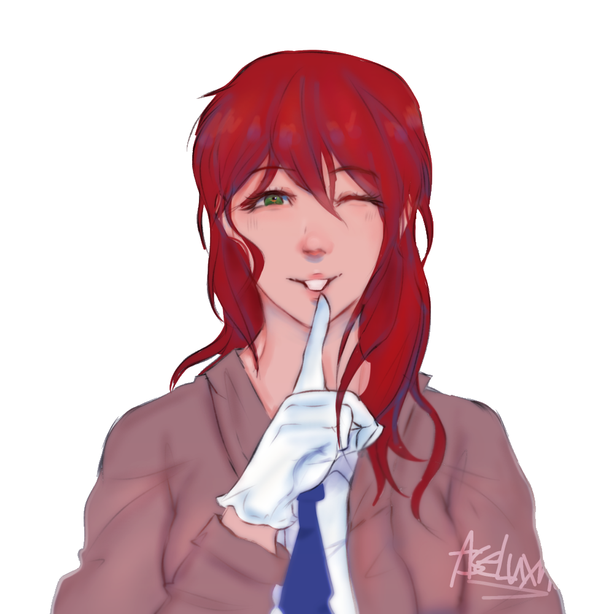

"I consider myself rather dignified, don't you think?"
Title: Birb Scout
Full Name: Jackson Quali
Nicknames: Birb (Sandy), Wacky Jacky (Derrick)
Birthday: April 12
Age: 26
Race: Full Mystic Bird
Height: 6'2"
Status: Alive
Job: Police Sergeant
Affiliations: RPD
Early Life
A bright eyed chick who idolized the officers who keep his city safe
Current Life
A headstrong but timid bird who now lives the police life and realizes there's way less life saving and way more office management then he originally thought.
Personality
Jackson is a kind hearted individual who stands his ground on a wooden foundation, sturdy but can be easily brought down if you know the right words. He spends most of his time tending to the Bebei sisters and helping Valentine with scouting work when needed.
Skills
Aerial Combat, Scouting, Flight
Strengths
Physical Strength (More then he'd let on), Rich, Well Worded
Weaknesses
Easily Flustered, Can be clumsy
Hobbies
Flying around, Organizing, Cleaning, Watching TV/Movies
Loves
Brioche Buns
Likes
The Bebeis, Valentine, Solving Cases, Formalities
Dislikes
Daisy and Bear jumping on him, Baseless Accusations
Hates
Briggs
Physical Looks
A blue bird mystic with a yellow beak and shrewd brown eyes.
Clothes
(RPD Uniform) Standard Dress shirt with a black tie but the sleeves are cut off to allow his winged arms to go through, Standard Black Trousers but no shoes (due to his talons)

"Quote"
Status: Close Friends/Colleague
How they met: Met at work when Sandy first joined the force
Personal Sentiments:
Extras:

"Quote"
Status: Close Friends/Colleagues
How they met: Met through Sandy as coworkers
Personal Sentiments:
Extras:
"Quote"
Status: Close Friends/Boss
How they met:
Personal Sentiments:
Extras: Despite being close friends, he still calls her Albane

"Quote"
Status: Friend
How they met: Val bringing Eren to work
Personal Sentiments:
Extras: Still partially annoyed that she chose Eren over him
"Quote"
Status: Colleague
How they met: Met at work
Personal Sentiments:
Extras: Dislikes his nickname
"Quote"
Status: Enemy
How they met: Met at work
Personal Sentiments:
Extras: Despises him for nearly killing Sandy
"Quote"
Status: Former Boss/Current Enemy
How they met: When he started working as a police office
Personal Sentiments:
Extras: Hopes he burns in hell for what he did to his friends
- Tends to call people by their last names